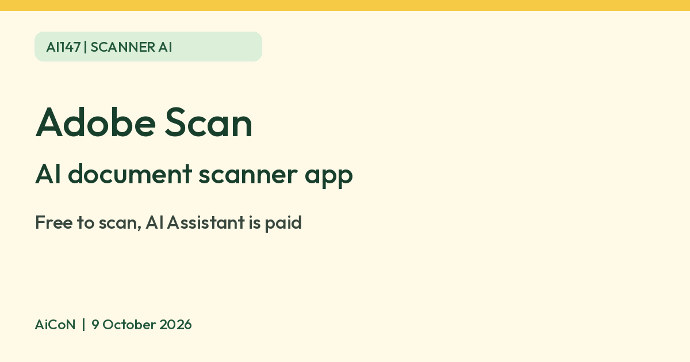

Adobe Scan: free AI document scanning, with a paid AI Assistant
Adobe says Adobe Scan is free to download and uses AI to straighten and clean scans. Its AI Assistant, which answers questions about a scan, is a paid feature with a limited free quota.

What it is
Adobe Scan is a document scanner app. Adobe's page says it uses AI to correct perspective, sharpen text and remove glare and shadows, and it uses OCR to turn scans into searchable, editable PDFs. The Google Play listing also mentions a Magic eraser that removes fingers, shadows, stains and creases from a scan.
Is it free
Partly. Adobe says "Adobe Scan is completely free to download", and the scanning and OCR features above are described on that free-app page. The AI Assistant is different. Adobe's help page says it "is a premium feature that requires a subscription", and that you can ask only a limited number of questions before you are asked to subscribe. The Google Play listing says a subscription increases OCR capacity from 5 to 100 pages and lets you combine scans. Advanced export and editing features may also require payment. We did not check subscription prices.
How to try it
- Install Adobe Scan from Google Play or the App Store. The publisher is Adobe.
- Point your camera at a document. The app finds the edges and captures it.
- Save it as a PDF. Use OCR to make the text searchable and editable.
Limits to know
- The AI Assistant, which answers questions about a scan with citations, is a paid feature. Adobe's help page describes it for the Android app.
- Read the plan, renewal price and cancellation terms shown in your account before starting a trial. Free download does not make paid tools free.
- Scans are automatically saved to Adobe Document Cloud, according to the Google Play listing. A scan of an ID or bank paper holds private details. Check account access and sharing before scanning sensitive papers.
- The Google Play India storefront lists Adobe Scan. We did not install it or test account access in India.
- We did not test the app ourselves.
Frequently asked questions
Can I scan and make a PDF for free?
Adobe says the app is free to download and describes scanning to PDF with OCR on its free scanner page.
Sources: Adobe Scan page, AI Assistant in Adobe Scan, Adobe Help, Adobe Scan on Google Play. Checked 9 October 2026.